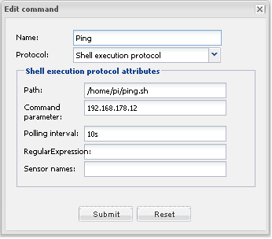

Hello,
I finnaly found a way to turn on my samsung TV with openremote. Possibly it will help somebody out here.
I hooked up a raspberry pi with raspbmc installed as a media center. It´s connected via HDMI.
Openremote is also running on another raspberry pi.
Step 1.
Create a .sh file on raspbmc that turns on the TV (/home/pi/turnonsamgungtv.sh).
This file contains: (cec client seems to be in the standard raspbmc distr.)
echo "on 0" | cec-client -s
Step 2.
Create a .sh file on the openremote controller that calls the file in step 1.
This file contains:
ssh pi@192.168.178.23 bash -l -c "/home/pi/turnonsamsungtv.sh" > /dev/null
Step 3.
Make sure no password is required when U start the file in step 2.
Here's the howto: http://www.linuxproblem.org/art_9.html
Note: OpenRemote is running as root on my raspberry. Make sure there's a passwordless login for user root.
Step 4.
Create a command in Openremote which calls the file in step3 (Shell execution protocol) and hookup your button to call it in your design.
Note: Don.t forget to make the sh files executable. ( chmod +x filename.sh )
-------------------
How to tell if your TV is on or off:
Step 1.
Create a file called ping.sh on your openremote server.
ping.sh contains:
#!/bin/bash status=off for i in {1..3} do onOff=$((ping -c 1 $1 >/dev/null && echo on) || echo off) #printf "${onOff}" if [ $onOff = "on" ] then status=on fi sleep 1 done printf "${status}"
Step 2.
Create a command in openremote

Step 3.
Hookup a sensor to command in step 2
Note: I also use this ping script to ping my smartphone. This way OpenRemote can detect if I'm home.
{kind=link}
{kind=link}